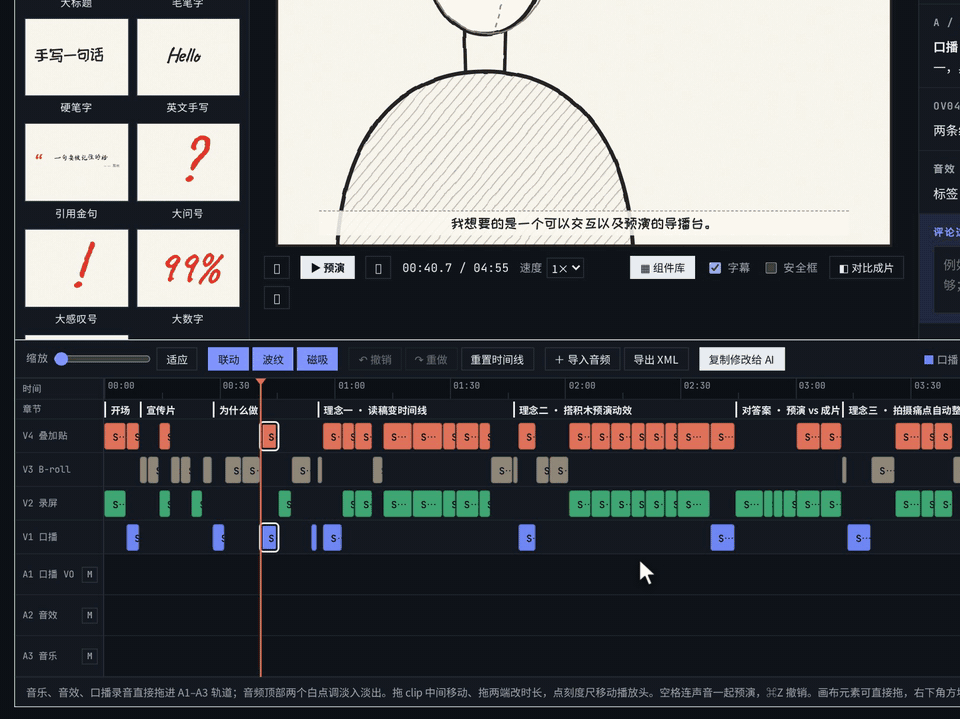
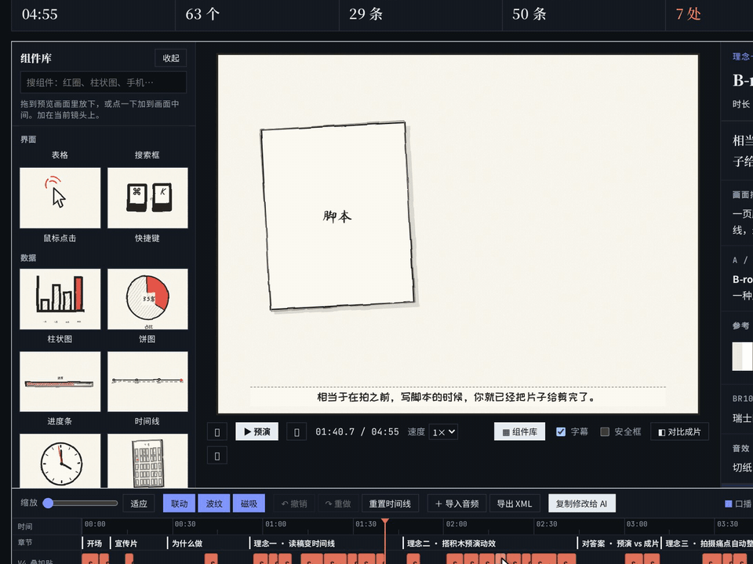
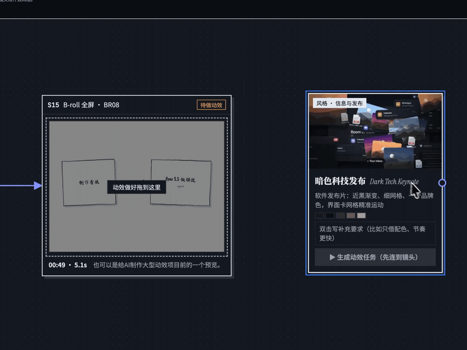
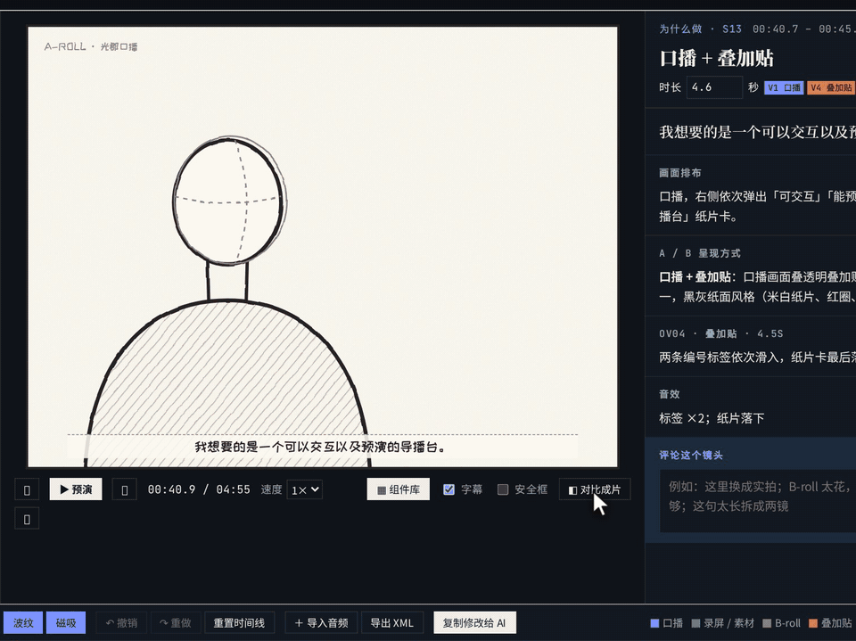
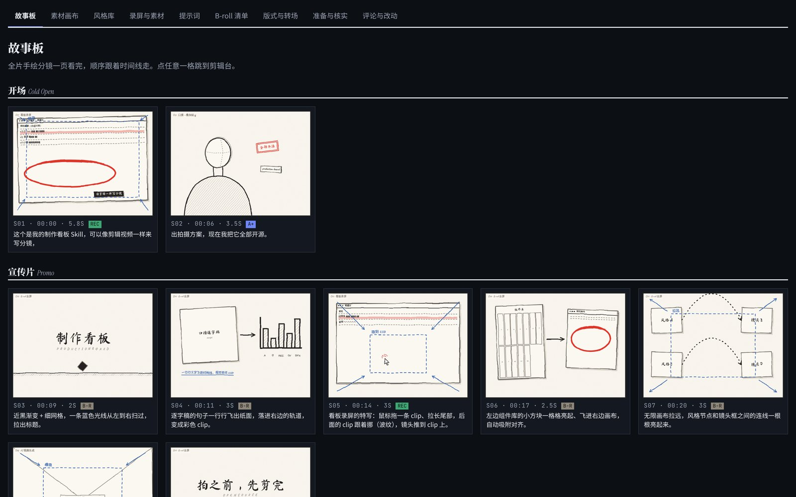
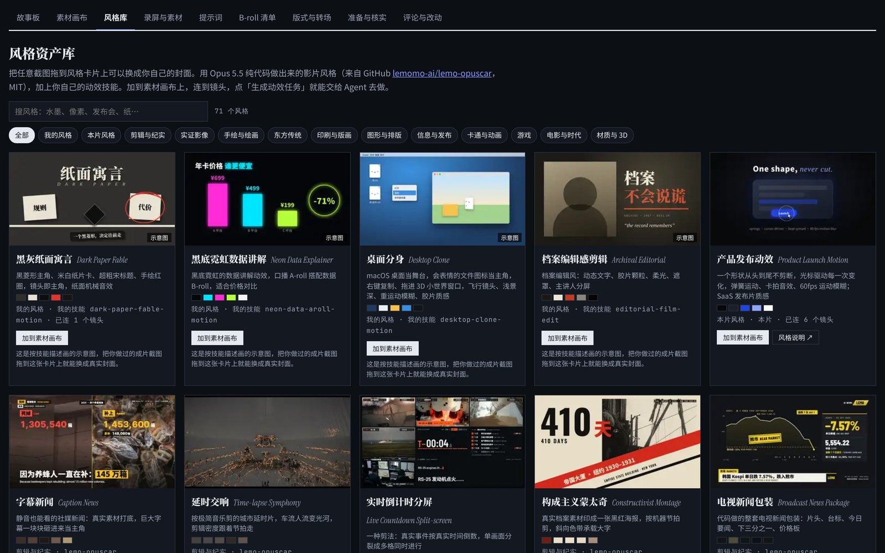
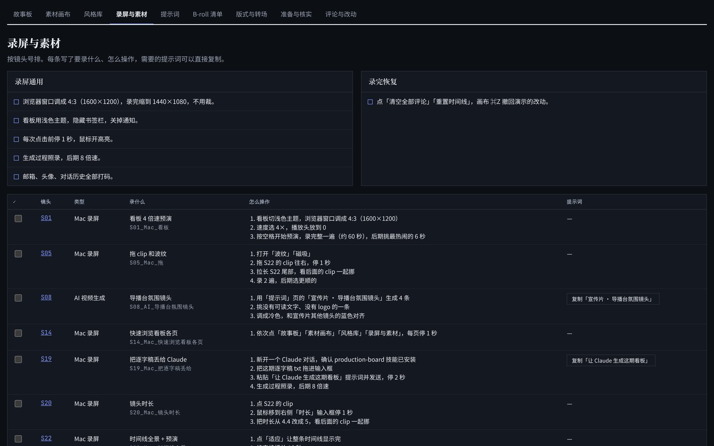
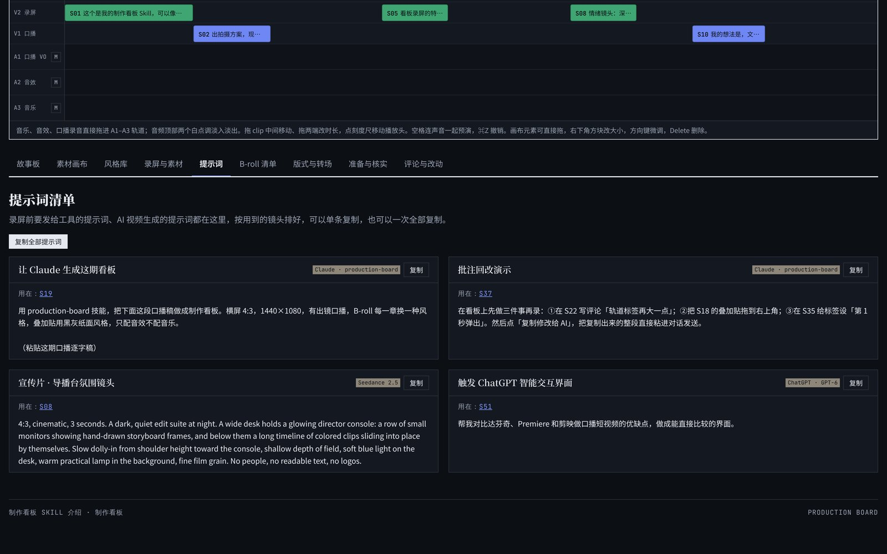

拍之前，先把片子剪完。Cut the film before you shoot it.
丢进一份口播逐字稿，得到一个能按空格从头预演、能直接拖动修改的视频制作看板。一个 HTML 文件，打开就能用。Hand it a voice-over script and get back a production board you can play from the top and edit by dragging. One HTML file, open and go.
AI 交过来的通常是一大堆表格和文档：看不完，也没法动手改。拍完才发现节奏不对，就只能重来。
What AI usually hands you is a pile of tables and documents: too long to read, impossible to edit by hand. You find out the pacing is off only after the shoot.
制作看板把逐字稿直接排成一条剪辑时间线：每个镜头多长、画面里有什么、哪里录屏、哪里实拍、哪里叠贴纸，全在上面。不对就拖，改完一键交回给 Agent。
Production Board lays the script straight onto an editing timeline: shot lengths, what's on screen, where the screen recordings, live shots and overlays go. If something's off, drag it, then send every change back to the agent in one click.
写脚本的时候，片子就已经剪完了。By the time the script is written, the cut is done.
镜头时长按语速自动算好，口播、录屏、B-roll、叠加贴四条画面轨，口播 VO、音效、音乐三条音频轨。按空格带声音整片预演。
Shot lengths come from speaking rate. Four video tracks (A-roll, screen, B-roll, overlay) and three audio tracks (VO, SFX, music). Press space to play the whole cut with sound.

60 多个手绘分镜风格的画面组件，从组件库拖进画布，摆位置、改大小、设出现时间和入场方式。做动效的 Agent 能照着知道每个元素该在哪、什么时候出来。
60+ storyboard-style components. Drag them onto the canvas, position and resize, set when and how they enter. The motion agent can see exactly what appears where, and when.

无限画布上，要录屏、实拍的镜头先框好位置，拍完拖进框就到位。风格资产库里有 66 种用 Opus 5.5 纯代码做的影片风格，连线到镜头，点「生成动效任务」，任务说明就整理好了。
On an infinite canvas, frames wait for the footage you still need to shoot; drop the clip in and it's placed. The style library has 66 film styles built in pure code with Opus 5.5. Connect a style to shots, press "Generate motion task", and the brief is written.

成片导入看板，用滑杆、橡皮擦或圆形蒙版把预演和成片擦开对比，位置、节奏对不对得上，一眼就清楚。
Import the finished edit and wipe between preview and final with a slider, a brush or a circular mask. Framing and timing either line up or they don't.


所有镜头按章节铺开，一页看完整片结构。Every shot by chapter, the whole structure on one page.

66 种影片风格，可以加自己的风格和封面。66 film styles, plus your own styles and covers.

要录什么、怎么录、录没录，逐条勾掉。What to capture, how, and what's done.

视频生成提示词集中放；每镜可批注，一键复制修改给 AI 批量回改。Video prompts in one place; comment on any shot and send all changes back in one click.
对 Claude 说「做一个制作看板」。Ask Claude for a production board.
画幅、要不要出镜、B-roll 风格、素材从哪来。Aspect ratio, on-camera or not, B-roll style, footage.
按空格看一遍，拖、改、批注。Press space, then drag, edit and comment.
复制修改给 AI，拿到新版本。Copy your changes to the AI and get the next version.
把 Skill 文件夹放进 skills 目录：Put the Skill folder in your skills directory:
git clone https://github.com/guangjun5952/production-board cp -r production-board/skill/production-board ~/.claude/skills/
看板界面和 Skill 说明目前是中文的；英文稿子 Claude 也能照常处理。示例看板就是介绍这个项目的那期视频的完整看板。The board UI and Skill instructions are in Chinese for now; Claude handles English scripts just fine. The live demo is the full board for the video that introduces this project.